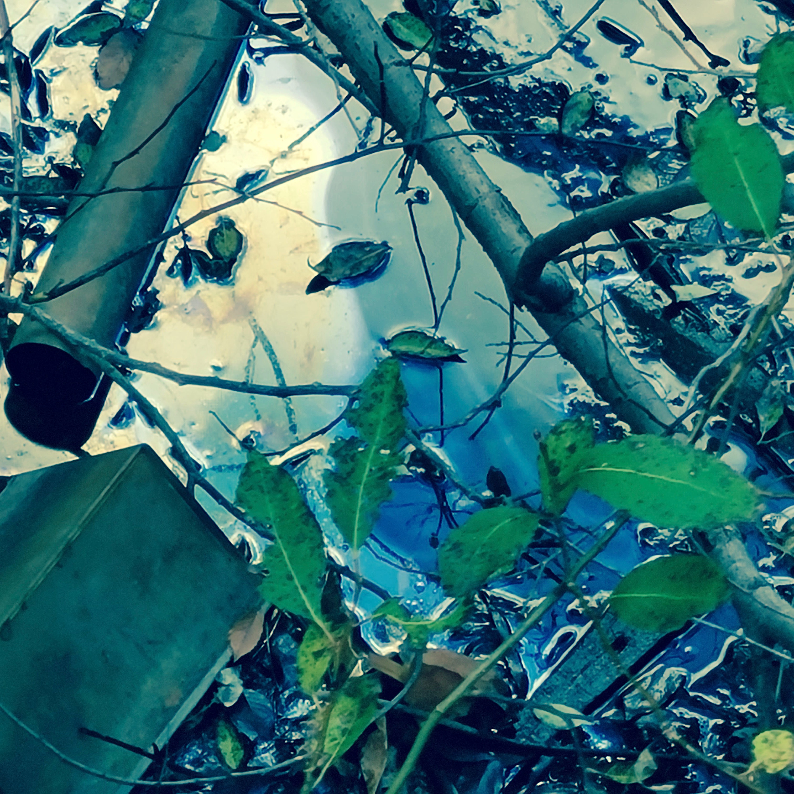

Nobuhiko Hayashi 林暢彦
Auditory artist
News
Works
Profile
Contact
Archives

Works
Installation
“Yukkuri” Radio
(Slowly Radio) | ゆっくりラジオ (2021-)
The Form What Surrounds Us | 取り巻くものの形式 (2021-)
117 (2021-)
Untitled (For Talking Water) | 無題（言問う水沫のための）(2015)
Ahanachi, Mizoume
(Pull Down the Ridge, Fill In the Canal) | 畦放ち、溝埋め (2014)
Audio-visual
habitat2 (2022)
Fixed audio work
-ist (2022)
Harness (2022)
Silence Trade 2 | 無言交易 2 (2018)
Silence Trade 1 | 無言交易 1 (2018)
Website
Ecomimesis —Ladders— | エコミメシス —梯子— (2019-2021)
Graft the Voices | 声を接ぐ (2020-)
Sculpture
awai/araware
| あはひ／あらはれ (2016)
kai-awase
| 貝合はせ (2011)
Sound for filme
Shun Ikezoe "Waiting to hear from you" | 池添俊『声を待つ』 (2022)
Aya Kawazoe "Howling" | 川添彩『とおぼえ』 (2022)
Shun Ikezoe "Waiting to hear from you" | 池添俊『きっとうまく話せない』 (2021)
Aya Kawazoe "The Elephant Died" | 川添彩『ぞうが死んだ』 (2021)
Aya Kawazoe "Humongous!" | 川添彩『とてつもなく大きな』 (2020)
Aya Kawazoe "Night Train" | 川添彩『夜の電車』 (2019)
Yui Kiyohara "A Bagatelle" | 清原惟『ひとつのバガテル』 (2015)
^
To top